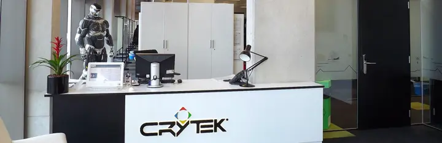

Recently, people, who are considering becoming Engineering Managers, have asked about my own experience.
How did I get into it?
How did I know it was what I wanted to do?
The answer may be interesting to others, so I wrote it down.
Let’s take a moment to note that becoming a manager is not a promotion. It’s a career change. There’s a myriad of reasons not to be a manager. Being a great individual contributor (IC) does not mean you will be a great manager. And, leadership does not equal management.
Additionally, my personal experience may not be similar to that of others. As a white, young, straight man, I have enjoyed loads of privilege throughout my career. Even as an immigrant. People often paid attention to what I had to say and, until recently, I didn’t even notice. My career is the result of hard work, (earned) luck, and privilege.
Let’s get into it.
What I did before becoming a manager

My full-time career started at Crytek UK, a video games studio, where I spent a couple of years. In the beginning, I was a Junior Developer. Later I was a mid-level one. I spent most of that time at the intersection between character AI and animation. I made the baddies and civilians look natural. The job required me to collaborate with many disciplines. It was quite the list: designers, animators, producers, and gameplay/AI/animation programmers. Later, I took on the role of Scrum Master. That role helped me focus on outcomes over my contributions. This also gave me some stakeholder management skills!
Right after, I spent six months at Sony as an R&D Software Engineer. There, I had to manage up to improve our engineering practices and introduce CI. That is also when I started having some difficult conversations related to feedback. Those would prove invaluable later on.
Then, I joined Bloomberg, where things kicked off big time. During the first two years, my role was Senior Software Engineer. After that, I took on the Team Lead role, Bloomberg’s title for Engineering Manager in other places. In total, I was there for five years.
Here are some of the things I did before becoming a team lead.
🕸️ Owning projects with many dependencies: ours was an applications team. That meant we depended on many infrastructure teams. Projects usually had a significant coordination overhead.
🏈 Being a Scrum master: similarly to what I was doing at Crytek.
👩💻 Mentoring and coaching: we regularly had interns or new hires joining the team. A few times, I would be their mentor/buddy. This involved running my first 1-1s, setting goals, and giving feedback.
🏫 Helping with the graduate training class: Bloomberg ran several graduate cohorts a year. Each ran for 12 weeks. During the workshops, engineers helped the grads with their projects by talking through problems or doing code reviews.
✅ Being an interviewer: during my time there, I did hundreds of interviews and hired many engineers. I became more comfortable building rapport with new people and handling difficult situations. It made me think hard about the interview process and its faults. I wanted to be responsible for the process and improve it.
📚 Taking leadership training: everyone had to take this course before becoming a manager.
🦸♂️ Having a mentor: right after I became a people manager, I started working with a mentor. It was invaluable to have someone I could talk to about specific situations and peer review decisions. It helped me to explore and establish my management style and principles.
Many of these opportunities would not have come my way without a supporting manager. At some point, my manager moved to another team. I was offered the role, and I took it.
Was I sure I wanted to get into management?
Hell no!
I loved the individual contributor (IC) role. Solving technical problems and building a product people enjoyed. Losing that was scary! In the end, two factors made me give it a try:
The incredible reward of amplifying the powers of the team. Helping people develop and breaking down some organizational silos felt terrific.
I had seen people make the opposite transition, going from manager back to IC. It could be a two-way door decision after all.
There’s no perfect answer, and you should come up with your own reasons for making the change. Arguably, one could go a long way being an amplifier of their team and helping people develop as an IC!
Stepping into the engineering manager role is challenging. The skills that got you there are not the skills that will make you succeed in your new role. If that wasn’t enough, you will feel lonely. The folks who were your peers are now your reports. Those relationships are entirely different now.
You will need plenty of support.
Having a mentor was certainly invaluable, and you should aim to have one. A few selected books gave me tremendously helpful insights. There is a lot of faff on the Internet out there about leadership. So, I thought writing a list may help you find the good ones!
Written by Alex MacCaw as the actual handbook for managers at Clearbit. It covers a wide range of topics, such as self-awareness, hiring, coaching, expectation setting, and processes with down-to-earth, actionable advice.
The book is quite opinionated, which may not be an entirely bad thing if what you need right now is a bit of structure before you find your management principles and style.
Oren Ellenbogen takes you through the transition from Maker to Manager in this short and to the point guide. Each chapter comes with a bit of “homework” to put what you learned into practice.
As a bonus, you should subscribe to Oren’s newsletter Software Lead Weekly. It is the engineering manager newsletter.
As an Engineering Manager, you will need to have many challenging conversations. They can be a tremendous emotional drain. You need to let a team member know they are underperforming, but you don’t want to be an ass. I get it. Radical Candor by Kim Scott can give you some of the tools to deliver difficult feedback with care and make it easier on your mental health.
A fable by Patrick Lencioni that tells the story of a newly appointed CEO who finds all sorts of politics and issues within her executive team. This book helped me realise that I no longer had one team, my engineering team. My teammates were now the engineering leadership group.
Another fable, this time by Ken Blanchard. Perhaps this one is a bit dated, but I remember it dearly as it is one of the first ones I read. It tells the story of a new manager who seeks the knowledge of the legendary One Minute Manager.
🙌 Thanks for reading! Did you notice how only one of these is specific to engineering?
The famous Joel Test is a super quick and fun way to evaluate an engineering organisation by answering 12 simple “yes or no” questions. At the end, you get a score over 12. There is a problem however.
The test is now 22 years old 😱.
Tools and processes to build software have changed a fair bit over the last two decades. What was considered a potential nice to have, may have become an absolute basic. So, I decided to come up with my own, updated test. Make sure to read the original one first.
Behold the David Test.
Can new joiners set up and run the system locally in less than one day by just reading the docs?
Are your builds made without any human intervention?
Do you automatically deploy to production?
Is the system, to some degree, observable?
Do you have a technical debt strategy you actually follow?
Is your team predictable?
Does the squad (Engineering + PM + Design) refine the backlog together?
Do engineers have sizeable chunks of time free of meetings?
Can engineers choose the best tools for the job?
Does the team collectively own quality and have a testing strategy?
Do you have a standardized interview process?
Do you have a continuous discovery culture?
Let’s dive a bit deeper.
1. 👩💻 Can new joiners set up and run the system locally in less than one day by just reading the docs?
Companies that do not have a simple and well documented environment setup process suffer all sorts of issues.
When a new engineer joins, they spend forever before they can even think of contributing with a code change. As the process is not documented, they get blocked constantly. Multiple people need to help, as knowledge is spread across. As a result, the new joiner is frustrated from day 1!
A more insidious consequence is the myriad of subtle issues different members of the team experience over time as everyone has environments configured in significantly different ways.
Ideally, a new engineer should follow the documentation and bring up the application locally within 30 minutes max.
2. 🚚 Are your production builds made without any human intervention?
Many companies still rely on developers making production builds on their local machines to ship changes. Not only does this take time, it also introduces a silly amount of risk.
I once caused a major outage after some local changes made it into a build that got deployed 🙈. I am deeply embarrassed but it’s very much a real story and the best example I can give to illustrate this point.
Let machines make the builds in reproducible environments with no human intervention at all.
3. 🚢 Do you automatically deploy to production?
When teams deploy to production after every merge to the main branch something magical happens. The size of every deployment becomes smaller and the feedback loop tightens. The consequences are fantastic:
Changes are smaller, the risk of a change breaking the system is reduced.
When a breaking change is introduced, it’s easier to identify it and fix it.
The cost of integrating code becomes tiny.
At the very least, teams should routinely deploy to production multiple times a week. Ideally, there should be multiple deployments to production a day, one for every merge to main.
Observability has many facets and folks often misunderstand what it means. Essentially, can you answer questions about the state of our system and what real users are experiencing just by looking at its outputs?
At the very least, some of the following need to be present.
Logging
Monitoring
Alerting
Tracing
Tracing is, perhaps, the most advanced, so you get a pass if you don’t have it!
5. 🏦 Do you have a technical debt strategy you actually follow?
Too much technical debt can slow you down to a crawl. At the same time, no technical debt at all is also bad! Engineering orgs should have a strategy outlining their approach to technical debt and actually follow it. This often requires strong relationships of trust and alignment with other roles within Product such as Product Managers.
Not having a strategy means that tech debt is tackled in a chaotic, unstructured way, thus limiting the impact. Perhaps, tech debt is not even tackled at all!
6. 📊 Is your team predictable?
Estimates are damn hard but the reality is that businesses need to know approximately when projects will be done, contracts may depend on them! A team that seldom misses deadlines in a sustainable way is one that builds a tremendous amount of trust. It’s one of the key indicators of high performing teams.
You don’t need to be able to predict everything with high precision. In order to be predictable, you must break down projects into tiny increments. These tiny increments are a lot easier to predict. If you continuously deploy your incomplete increments behind feature flags, the chances of having something releasable when time runs out are much higher.
7. 👌 Does the squad (Engineering + PM + Design) refine the backlog together?
Too often does one see teams where it’s just the lead and the PM who refine the backlog. Then, the lead breaks stories into tasks and assigns them to the team. That is a horrendous practice.
Not everyone will be aligned on what the team is making and why. People will make worse decisions during implementation, resulting in more back and forth or the wrong thing gets built.
When a diverse set of people who feel safe to contribute refine together, you will inevitably build a better product.
Individuals will never learn how to break down a larger story into smaller chunks.
People lose agency over the work they do and become disengaged.
8. 🤔 Do engineers have sizeable chunks of time free of meetings?
Remote work has become more mainstream and many folks no longer need to deal with noisy open plan offices. However, that does not mean they are free to do deep work for large chunks of time because their calendars may be full with a collection of Zoom calls spread across the day.
Everybody is different, but most people are more productive when they can block out time for deep, uninterrupted work.
9. 🛠️ Can engineers choose the best tools for the job?
Being able to get the best tools money can buy is crucial. Engineers are expensive and you don’t want to pay them so that they can spend endless hours fighting their tools or doing work that could easily be automated by an off the shelf product.
We can take this forward and say that there isn’t a single toolbox to fit them all. People may feel more comfortable with a particular IDE and they should have the freedom to not have to rewire their brain in order to become proficient with another one.
10. 🐛 Does the team collectively own quality and have a testing strategy?
Traditionally, teams that cared about quality simply had a separate QA department. I think that dilutes the ownership of quality in product delivery teams. In my experience, quality is higher when the whole cross-functional squad cares about it and owns it. You may still have a QA role, but they should be embedded within the team.
It certainly helps when a testing strategy exists, it’s documented and actually applied. This document should outline the principles for automated and manual testing ans well as figuring out what to test.
11. 💬 Do you have a standardized interview process?
The first step an organisation can take to avoid having a completely broken interview process is to standardize it. An established process everyone goes through allows you to compare candidates more effectively while minimizing bias. It will become slightly easier to increase the diversity of the team, although it won’t magically make your team more inclusive.
A standard process is the absolute bare minimum. Do you want to work at a place where only buddies are hired, everyone thinks the same and it’s basically a group of techbros?
12. 🔍 Do you have a continuous discovery culture?
The iterative process does not only apply to actually delivering the software, it’s extremely relevant within discovery as well. Organisations that continuously learn about users, test for product market fit and analyse the usage of the most recently released feature will always have the upper hand. When folks other than the PM and designer are involved, the team is set up for success. Look at whether, as an engineer, you can actively participate in the following.
User interviews.
Design sprints.
A/B testing.
✅ What is your organisation’s score?
12/12 is ideal. 10/12 is ok, it’s always good to aspire to do better! Anything below it and you should start making some changes, NOW.
It’s already been a while but, back in November last year, I participated in a panel about remote work organised by the Universitat Oberta de Catalunya (UOC). It was fantastic to share thoughts and opinions with other folks that had different backgrounds and experiences.
📽️ You can watch the entire session here although it is in Spanish.
Recently, I built a small React application that had a header, a navigation bar underneath and then the content. After scrolling past the header, the navigation bar was supposed to stay at the top and not scroll away.
Like so.
Making the navigation bar position: fixed; top 0; was not going to cut it because the header had to come first unless we scrolled past the navigation bar.
I wanted to keep the component that controls the layout as simple as possible, so I abstracted the stickiness logic into a useStickyhook. Here’s how you’d use it.
You stick (no pun intended) the stickyRef into the thing that you want to fix to the top after you scroll past it. Then, sticky will indicate whether it should be fixed at the top or not. I then use that to apply a sticky class.
.sticky {
position: fixed;
top: 0;
}
The extra div below the nav adds some extra padding so that the content does not immediately jump below the navigation bar when this becomes fixed at the top.
The first effect measures the vertical offset of the element we want to fix at the top after it’s scrolled past. The second one listens to the scroll event and determines whether we have scrolled past the element’s top edge and it needs to become sticky.